North of the Wall
Otherwise known as Hokkaido
OK, so Hokkaido (the northernmost of Japan’s major islands) isn’t actually north of a wall. But it does look surprisingly similar to some of the frozen landscapes of Game of Thrones.
I actually got back to New Zealand a couple of weeks ago, so I should probably do a summing-up post sometime soon. In the meantime though, I haven’t finished writing about my adventures before leaving. I actually went to Hokkaido (with Jackie, of course) during my final week in Japan, mainly to go and see the world-famous Snow Festival. It was certainly impressive …
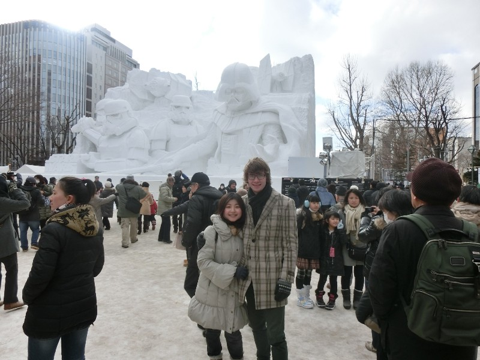The first sculpture we saw and arguably the coolest (I argue it was, Jackie argues it wasn’t). This was to celebrate the release of the new Star Wars movie later this year
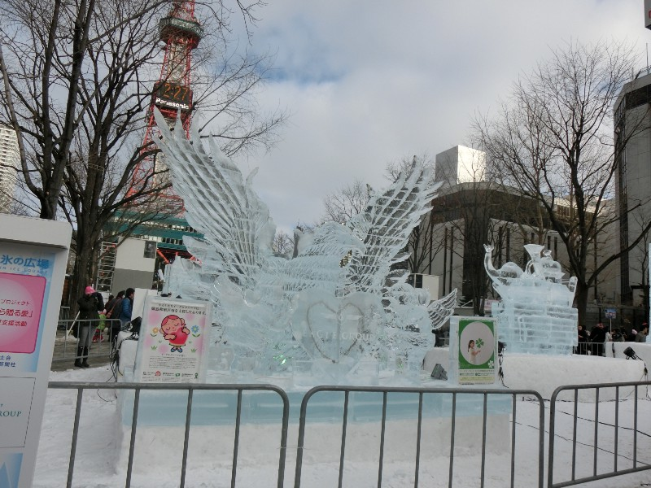The sculptures are the main attraction — some are made of snow, others are made of ice
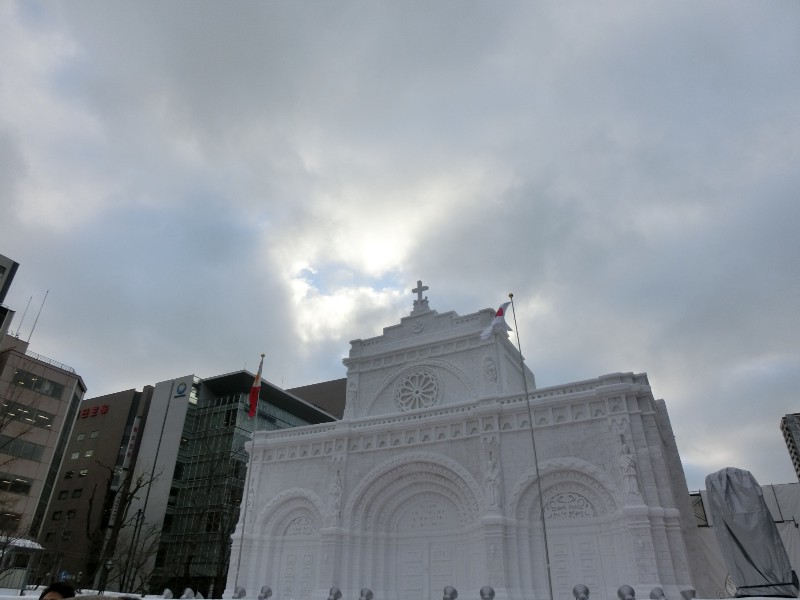One of several ornate building sculptures
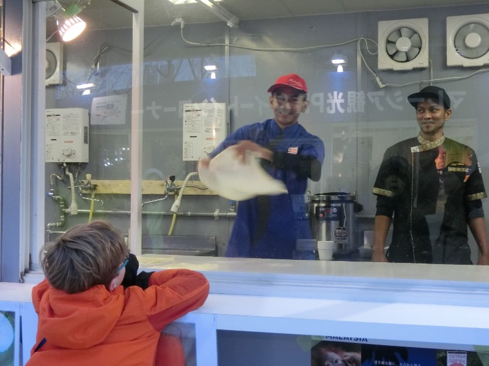At one of the food stalls a guy was entertaining the crowd (particularly this boy) by whirling and waving a piece of batter in time to music
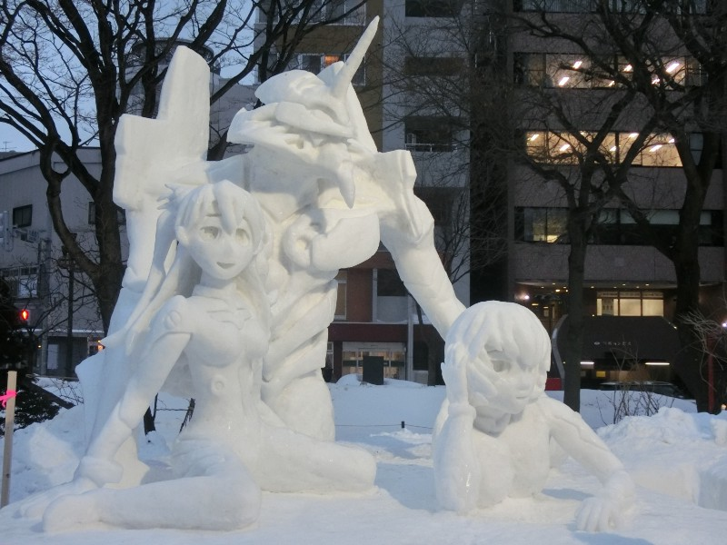A statue based on the anime “Evangelion” … which rocketed to the top of my want-to-watch list just based on the design of that robot
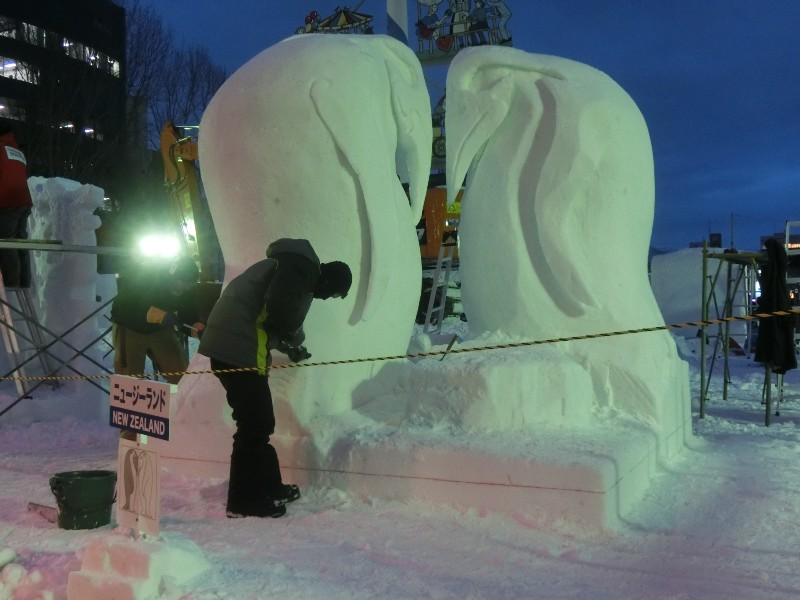Even New Zealand has a sculpture!
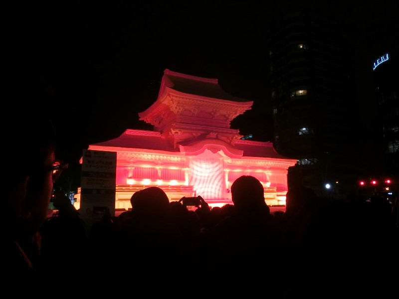In the evening many of the sculptures have spectacular light shows
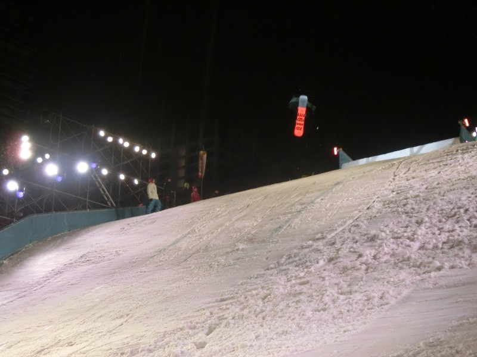The snowboarding competition was another highlight
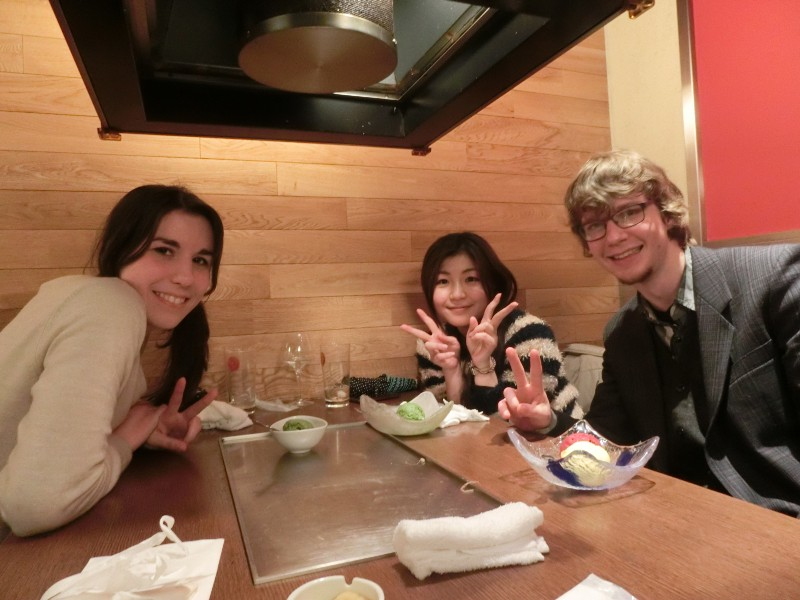It was also great to meet up with Julia, another exchange student, for Jingisukan (the Japanese name for what turned out to be New Zealand lamb!)
In the end we spent the best part of two days (half our holiday) at the festival, but we did discover some other interesting places as well.
We weren’t actually staying in Sapporo (the largest city and site of the snow festival) because by the time I booked hotel rooms were hard to come by and incredibly expensive. The town we did stay in was about an hour’s train ride away, and although it was small it did contain a rather fun science center.
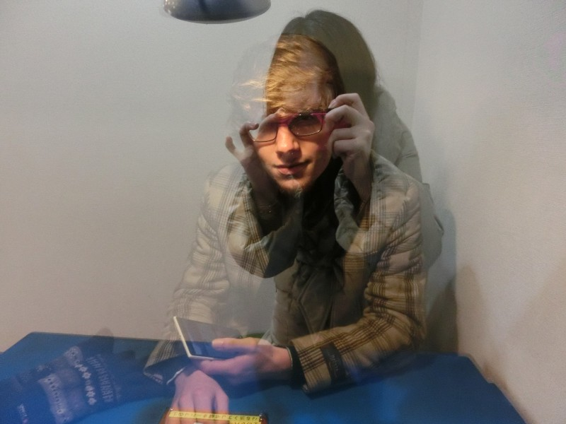A demonstration of how a one-way mirror works provided an interesting photo opportunity
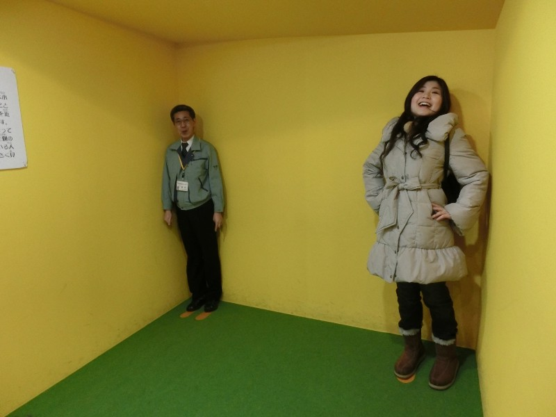Finally! Thanks to a clever optical illusion, Jackie is tall!
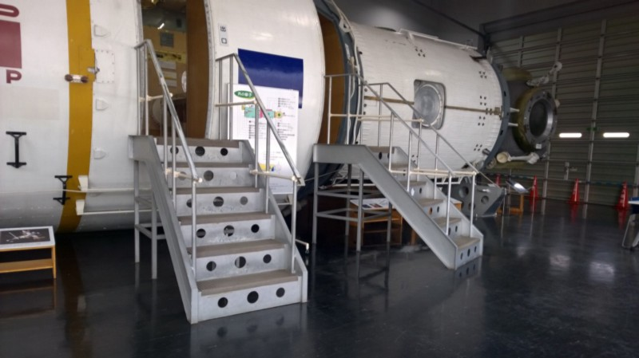The highlight, however, was this carefully restored space capsule
We also went on a trip to a chocolate factory. “Shiroi Koibito” is a famous Hokkaido souvenir, but the company that makes this also does numerous other chocolate products and (rather like the Cadbury factory in New Zealand) allows you to wander around their factory.
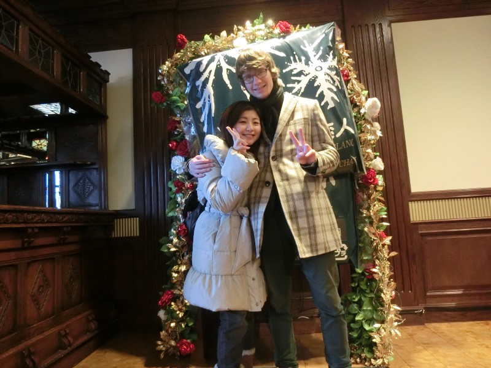“Shiroi Koibito” means “white lovers” so of course there’s a place for you to get a photo taken with your significant other …
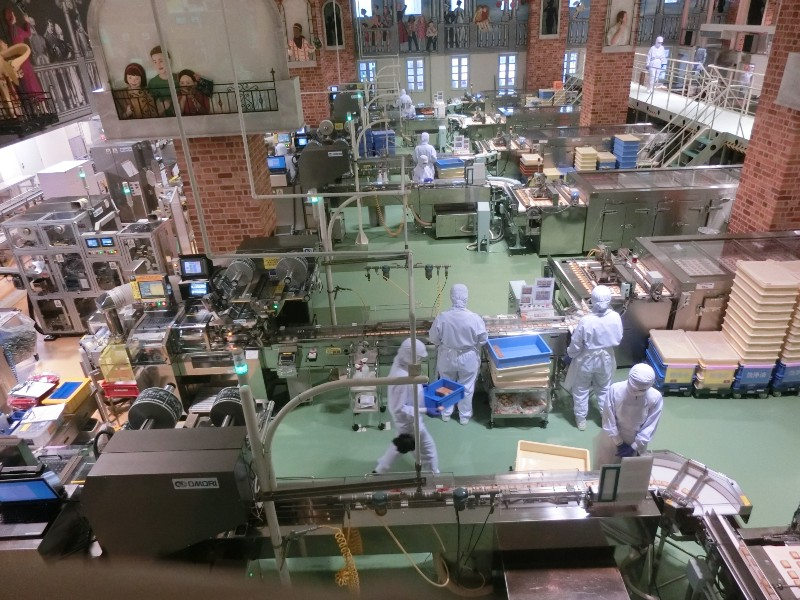The factory itself isn’t on the same scale as Cadbury’s New Zealand, but it’s still interesting to see
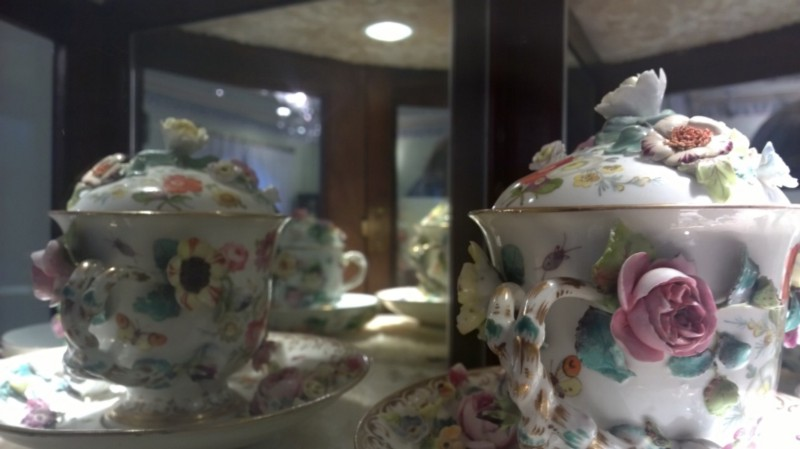You can also view a collection of antique chocolate-related crockery
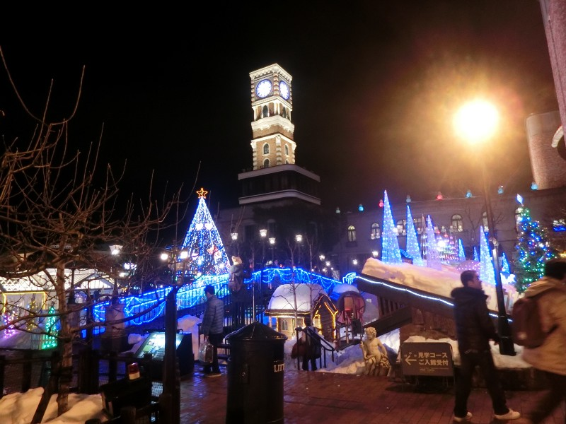And the outside has beautiful illuminations at night
All in all, another place I would highly recommend. I’d quite like to go back in summer (apparently it’s not as hot as the rest of Japan) and go to a few other places around the island (it’s also famous for hot springs and ice floes, neither of which we were able to see).
That’s all for now — as I said at the start I’ll probably do a summary post at some point, but my adventure in Japan is officially over. Time to start studying computer science again … and saving money to go back!